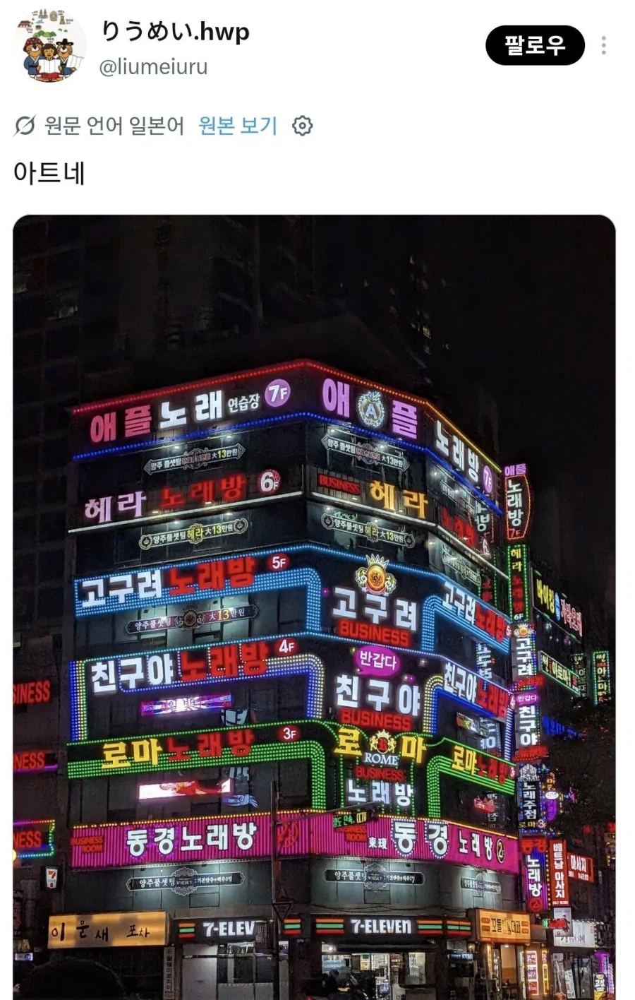
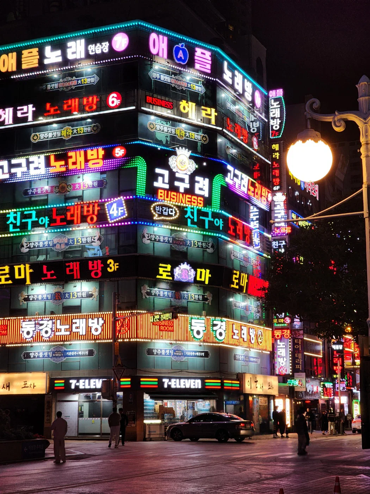

그냥 노래만 부르러 가는곳이 아닐꺼 같은데,,,,,,


그냥 노래만 부르러 가는곳이 아닐꺼 같은데,,,,,,
저기 한번가봄 ㅋㅋ 농심 호텔 앞인거 같은데
목욕의 신 목욕탕 있다고 해서 가봄
폭파마렵네
욕망의 타워
건거간
업종이 거시기해서 그렇지 아트적인거 같네. 느낌 좋은데? 게다가 일본인들이 환장하는 버블기 때 네오 아트? 그런 느낌이 강하네. 네온사인 분이기 죽이는데
1층 편의점은 존나 헬일것 같다
시급 두배 준다고 해도 못 할 것 같다
나름대로 레이아웃 맞춰놨네
저기가 다 ㅍ싸롱 그런거임? 도대체 이용자가 얼마나 많아야 저 건물이 다 유지될까
용원인줄 알았더니 ㅎㅎ
붓싼놈들은 이무가 새인걸 진작 알고 있었네 ㄷㄷ
이문새포챀ㅋㅋㅋㅋㅋㅋㅋㅋㅋㅋㅋ
부산보도마을 ㄷㄷ
집적이익 ㅋㅋ
저긴 걍 노래방이라하네
우리쪽 동네는 노래바♡ ㅇㅈㄹ로 해두던데ㅋㅋㅋ
성병타운
창원에 저런데 많자나
욕망의탑
거의 10년전 아프리카 오메킴이랑 김택용 팀고구려 만든게 저기구나 ㅋㅋㅋㅋ
별로엿다
1층 편의점 싱글벙글
온천장 저쪽 가게주인이 다 같은사람임